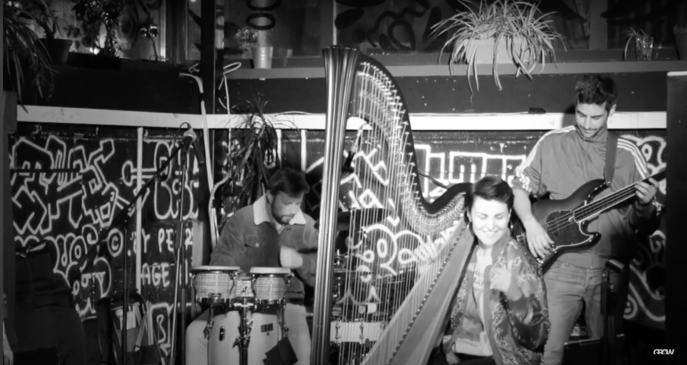

Hackney Rhythm is a collaborative collective from East London. Our purpose is to enable artists to have the necessary platform to showcase their work: Through promoting to setting up collaborative nights to working with them in order to realise their vision: All types of artists are different and exciting and we simply want to provide a platform for them which is formed by this belief. My tasks vary from web design to articles composition, music and video production and post-production, events planning and organisation, live music engineering and performance, venues scouting and agreements negotiation, acts liaising, content creation, etc...
